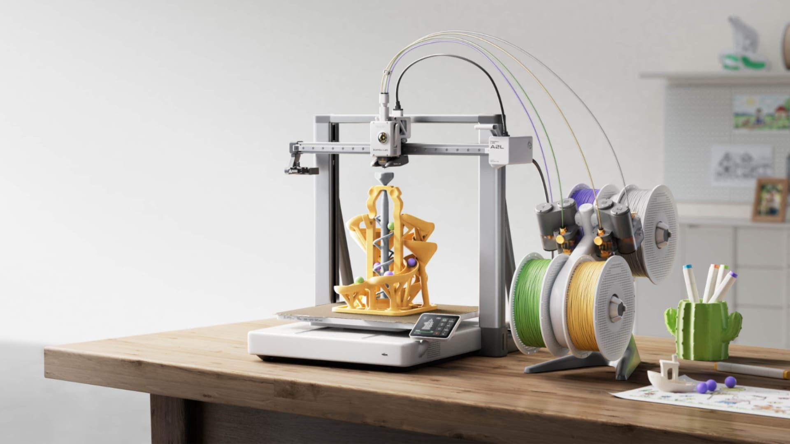

Build Volume: 330 × 320 × 325 mm
Core Features:
• Extra large build volume — 105% bigger than standard 256mm models
• Ideal for large projects, furniture parts and multi-part prints
• Adaptive Vibration Compensation with real-time calibration
• High-speed CoreXY-level performance
• Supports PLA, PETG, TPU and engineering filaments
• Quick-swap nozzle system (0.2 / 0.4 / 0.6 / 0.8 mm)
• Built-in camera + enhanced monitoring
• Modular toolhead support (cutting / plotting modules available)
• Quiet operation (~49 dB in silent mode)
• Full auto calibration and user-friendly interface
• Excellent choice for makers needing bigger print size